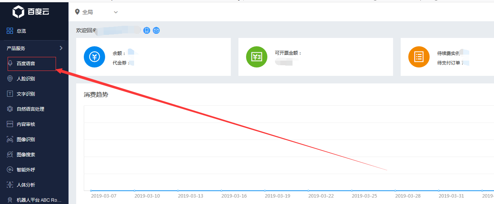
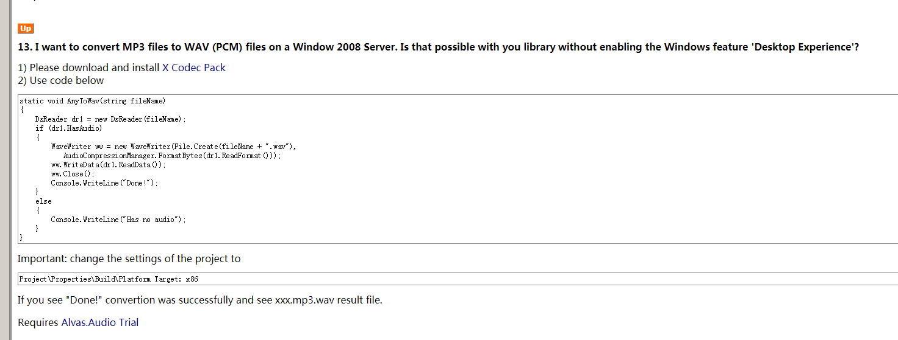
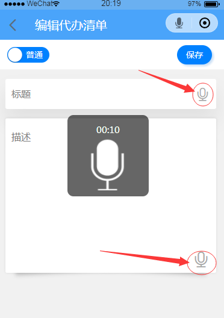
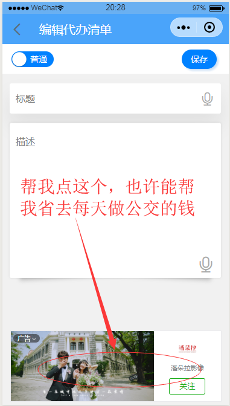

最近想给自己的待办清单任务微信小程序想加个语音识别识别功能，废话不多说，直接说重点，语音识别使用的是百度语音识别api，因为微信小程序的录音输入文件目前只能是mp3或aac 但是百度语音识别不支持这两种（百度api接口文档上有说明），所以需要把音频格式转换一下，我这边使用的是Alvas.Audio.dll转换的，目前没发现什么问题。
百度云账号地址：https://login.bce.baidu.com/
Alvas.Audio下载地址：https://download.csdn.net/download/u014265946/11094962
1、登录百度云账号后打开百度语音页面

创建一个语音识别的应用，记录应用的相关信息，如果API Key、Secret Key ....下载sdk......这里废话就不多说了api文档上面都有 https://ai.baidu.com/docs#/ASR-Online-Csharp-SDK/top。
（这是需要注意的是百度提供的sdk引用的Newtonsoft.Json 10.0.0.0 以上的版本，所以如果您项目中使用的是低版本的，必须升级Newtonsoft.Json）
2、下载 Alvas.Audio.dll 引用到项目中，
直接上代码
public class AudioHelper
{
/// <summary>
/// Mp3 to Pcm
/// </summary>
/// <param name="stream"></param>
/// <returns></returns>
public static byte[] Mp3ToPcm(Stream stream)
{
try
{
//mp3 -> mp3 mono 48000 samples per second example
//int sps = 48000;
Mp3Reader mr = new Mp3Reader(stream);
IntPtr formatMp3 = mr.ReadFormat();
byte[] dataMp3 = mr.ReadData();
mr.Close();
IntPtr formatPcm = AudioCompressionManager.GetCompatibleFormat(formatMp3, AudioCompressionManager.PcmFormatTag);
//mp3 -> pcm
byte[] dataPcm = AudioCompressionManager.Convert(formatMp3, formatPcm, dataMp3, false);
return dataPcm;
}
catch (System.Exception ex)
{
LogManager.DefaultLogger.ErrorFormat("Mp3 to Pcm 出错：{0}", ex.ToString());
return null;
}
}
}
上传语音到百度云平台上识别语音
/// <summary>
/// 百度语音识别帮助
/// </summary>
public class BaiduHelper
{
private readonly static Asr Client = new Baidu.Aip.Speech.Asr("你的 Api Key", "你的 Secret Key");
/// <summary>
/// 语音识别
/// </summary>
/// <param name="data">语音内容</param>
/// <param name="text">文本内容</param>
/// <param name="format">语音文件的格式，pcm 或者 wav 或者 amr。不区分大小写。推荐pcm文件,</param>
/// <param name="rate">采样率，16000，固定值</param>
/// <param name="devPid">默认1537（普通话 输入法模型）。dev_pid 必须为整数类型。参数可选值见REST API文档说明</param>
/// <returns></returns>
public static bool Recognize(byte[] data, out string text, string format = "pcm", int rate = 16000, int devPid = 1536)
{
text = "";
Client.Timeout = 120000;
var options = new Dictionary<string, object>
{
{"dev_pid", devPid}
};
var jObject = Client.Recognize(data, format, rate, options);
if ((int)jObject.GetValue("err_no") == 0)
{
text = jObject["result"][0].ToString();
return true;
}
else
{
return false;
}
}
}
微信小程序录音上传的代码我就就不贴了，网上很多。官方文档介绍的也很详细，整个流程就是微信小程序录音上传到后台，后台转码后通过百度语音识别api上传到百度云平台，返回结果后台返回给前端。
下面也是比较坑的地方，截止到这里，语音识别基本完成了，我做到这里的时候发现将将程序发到服务器上，语音转码总是报错，语音转码不成功，最后查找Alvas.Audio的官方文档中给出了解决方案，
http://www.alvas.net/alvas.audio,articles.aspx#mp3-to-wav-without-desktop-experience

要么安装桌面体验，要么安装库文件，我选择了安装桌面体验，具体怎么安装桌面体验，可以百度一下，（就像安装iis一样）
安装桌面体验参考地址：https://www.cnblogs.com/asdyzh/p/9826976.html
这个时候你发布到服务器上的程序，音频就会正常转换了
下面恭请大家同行们体验一下我的微信小程序，体验一下我实现的语音识别功能，
简单介绍一下我的微信小程序：
这个是个待办清单任务的小程序，和备忘录相似，主要是自己用方便，简单方便，没有复杂的设置，记录自己的规划，让自己的工作生活变的有计划。简单而实用。发现用的人还挺多，为了更简单，就加上了语音识别功能，在编辑任务的时候可以不用手打字，只要说话就能识别成文字，
使用语音识别的正确姿势
长按输入框上按钮，最长可一次性转换10秒语音，

如果文章对你有帮助的话，请打开微信扫一下二维码，点击一下广告，支持一下作者！谢谢！
